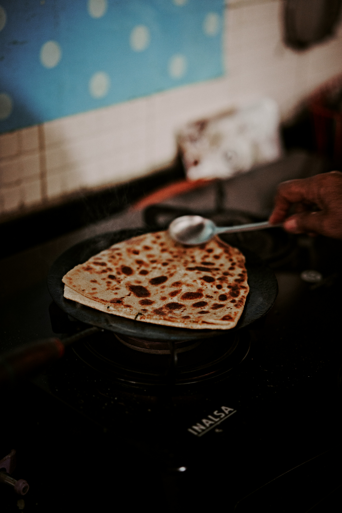

Aloo Paratha

Aloo Paratha is a popular Punjabi breakfast dish consisting of unleavened whole wheat flatbread
(paratha) stuffed with a spiced, tangy mashed potato filling, rolled out and cooked on a tawa/griddle
with oil or ghee, creating a crispy, flavorful, and hearty meal best enjoyed with Curd (yogurt), Mango
Pickle or Butter (Makhan). If you’re a fan of bread and potatoes, you’re going to love this Punjabi
Aloo Paratha or Aloo ka Paratha.
About Aloo Paratha:-
Aloo means “potato” and paratha means “flatbread” in Hindi, so the name is quite telling: aloo paratha
is an unleavened whole wheat flatbread stuffed with a savory, spiced, mashed potato filling.
Sometimes spelled Alu Paratha, this potato stuffed flatbread is a popular Indian breakfast that
combines two of my favorite starches in a single delectable package.
Ingredients for Aloo Paratha:-
- Wheat flour (atta) – 2 cups
- Salt – ½ tsp
- Oil or ghee – 1 tsp (optional, for soft dough)
- Boiled potatoes – 3–4 medium (mashed)
- Green chili – 1–2 (finely chopped, optional)
- Ginger – 1 tsp (grated)
- Coriander leaves – 2 tbsp (finely chopped)
- Salt – to taste
- Red chili powder – ½ tsp
- Garam masala – ½ tsp
- Amchur (dry mango powder) – ½ tsp (or lemon juice)
- Cumin seeds – ½ tsp
- Ajwain (carom seeds) – ¼ tsp (optional)
- Ghee or oil – as needed for roasting
Aloo Paratha Recipe:-
Making Stuffing:-
-
First, boil or steam 4 medium-sized potatoes in a pressure cooker, steamer or electric cooker. Add
enough water in a 2-litre pressure cooker or pan to just barely cover the potatoes.
-
For cooking in a pressure cooker – On a medium heat, cook the potatoes in water for 3 to 4
whistles. When the pressure settles down naturally, remove the lid and drain the water
very well. Allow the potatoes to cool enough to handle and then peel them.
-
For cooking in a pan – Cover the pan and cook potatoes in water till fork tender. For this
method, it helps to peel the potatoes and chop them in 2 inch cubes before boiling because
they will cook faster than whole potatoes. Using a colander, drain all the water and allow
the potatoes to cool.
-
If you haven’t done so yet, peel and chop the warm potatoes. Then mash the potatoes with a potato
masher.If you don’t have a potato masher, use a box grater to grate them and then mash the potatoes
with a fork.
-
The potatoes should be mashed very well, with no lumps, chunks or bits. Any lumps in the mix
will cause the stuffing to leak out of the dough when rolling.
-
Now add the following ingredients, feeling free to vary the spices as you like.
-
½ to 1 teaspoon finely chopped green chillies (1 to 2 green chilies) or serrano peppers
-
¼ to ½ teaspoon punjabi garam masala powder or Garam Masala Powder
-
¼ to ½ teaspoon kashmiri red chilli powder or cayenne pepper or paprika (optional)
-
½ to 1 teaspoon dry mango powder (amchur powder) – or use lemon juice instead
-
salt according to your taste
-
With a spoon, thoroughly mix the ground spices and green chilies into the mashed potatoes to get
an even mixture. Set the prepared aloo stuffing aside.Do check the taste of the spiced mashed
potato stuffing, adjusting the salt, red chilli powder, or dry mango powder if needed.
Make The Dough
-
In a separate bowl, add 2 cups whole wheat flour (atta). Make a well in the center. Add ½ teaspoon
salt (or to taste), 1 tablespoon oil or ghee, and roughly ⅓ to ½ cup water.
-
Bring the mixture together and knead into a smooth, soft dough for 8 to 10 minutes. Add more water
if needed. Cover and keep the dough aside, letting it rest for 20 to 30 minutes.
Stuff The Flatbread
-
Pinch two small balls from the dough. Flatten them and dust with whole wheat flour.
-
With a rolling pin, roll them into rounds roughly 4 to 5 inches in diameter. Try making both the
discs the same size.
-
On one of the discs, place the potato stuffing in the center, keeping about 1 inch empty space from
the sides.
-
Gently place the second circle on top.
-
Press and seal the edges with your fingertips. If you are not able to seal the edges, then brush
or spread some water on the edges and then seal.
-
Dust some flour on the stuffed aloo ka paratha and start rolling.
-
Roll the paratha into a round about 7 to 8 inches in diameter, or about the size of a normal roti
or chapati.
Make Aloo Paratha
-
On a hot tawa (skillet or griddle), place the rolled paratha. The tawa should be quite hot; cooking
parathas at a low flame will harden them. Ideally, the finished parathas are crisp as well as
soft.
-
When the base is partly cooked, flip the paratha using a spatula. You will see some air pockets on
this side.
-
Spread some ghee or a neutral flavored oil (e.g. sunflower) on the partly cooked part.
-
Flip again and you will see nice golden blisters on the second side. To clarify, the side which
has been spread with ghee will be on the bottom.
-
Spread some ghee on the second side facing you. A well-made and well-roasted alu paratha will
always puff up when roasting.
-
Flip again once or twice till both sides are cooked properly, with crisp brown spots. You should
also press the alu paratha edges down with a spatula or spoon so that they are fried well. Repeat,
making all parathas this way.
Home